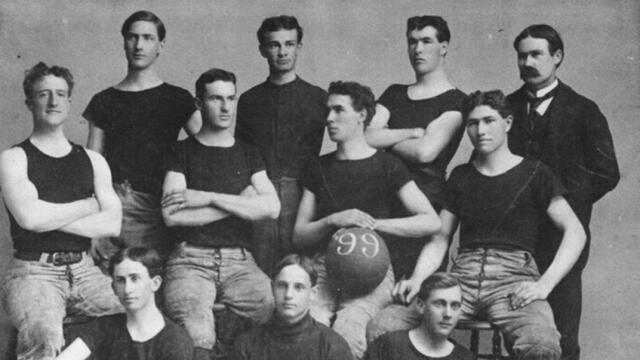
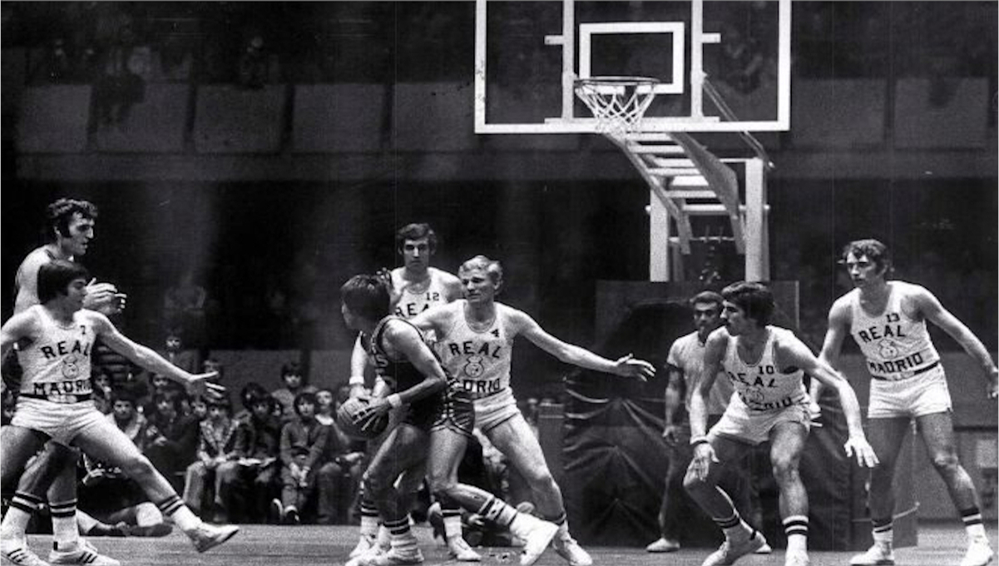
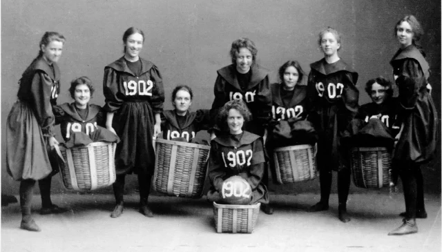
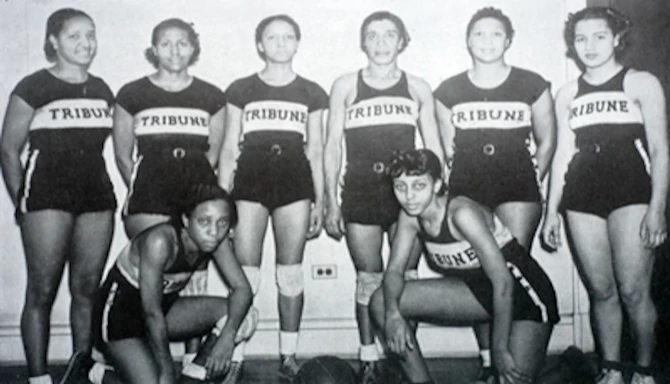
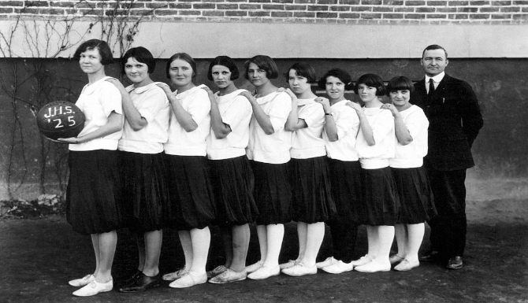

EL BALONCESTO FEMENINO
HISTORIA Y REGLAS
HISTORIA DEL BALONCESTO:
El baloncesto nació en un instituto de Springfield, por la necesidad de hacer alguna actividad fisica en invierno, en 1891.
El profesor Naismith analizó las actividades deportivas que se practicaban en la época, cuya característica predominante era la fuerza o el contacto físico, y pensó en algo suficientemente activo, que requiriera más destreza que fuerza y que no tuviese mucho contacto físico.

Primer equipo masculino de baloncesto.

Naismith, inventor del baloncesto jugando.

Partido de liga un poco más actual.
ES AQUI CUANDO ENTRAN LAS MUJERES:
En 1982 la profesora de E.F. Senda Berenson, adapto las reglas del juego a las necesidades de las mujeres
Adapto el número de jugadores, bajandolo de 18 a 7 y luego a 5, luego cambio el cesto de melocotones por aros metálicos y despues a la actual malla.
Comenzó a popularizarse y llego a los juegos olímpicos en 1976, 44 años más tarde que el baloncesto masculino, el cual se inauguró con Adolf Hitler

Primer equipo femenino de baloncesto.

Equipo femenino afroamericano.

Equipajes femenninos, falda larga y jersey.
LAS PRIMERAS REGLAS
- El balón puede ser lanzado en cualquier dirección con una o ambas manos.
- Un jugador no puede correr con el balón en las manos. El jugador debe lanzarlo desde el lugar donde lo toma.
- El balón debe ser sujetado con o entre las manos. Los brazos o el cuerpo no pueden usarse para sujetarlo.
- No se permite cargar con el hombro, agarrar, empujar, golpear o zancadillear a un oponente. La primera infracción a esta norma por cualquier persona contará como una falta, la segunda lo descalificará hasta que se consiga una canasta, o, si hay una evidente intención de causar una lesión, durante el resto del partido. No se permitirá la sustitución del infractor.
- Se considerará falta golpear el balón con el puño, las violaciones de las reglas 3 y 4, y lo descrito en la regla 5.
POSICIONES
| BASE |
ESCOLTA |
ALERO |
ALA-PÍVOT |
PIVOT |
| Normalmente suele ser el jugador más bajo del equipo, es el que sube la pelota y dirije el juego, tiene que tener buen manejo del balón, velocidad, visión y tiro exterior. |
Jugador bajo, rápido y ágil, debe aportar puntos al equipo, con un buen tiro incluyendo el tiro de tres puntos, un buen dominio del balón y una gran capacidad de entrar a canasta. |
Jugador de altura intermedia, tiene que estar entre la fuerza y tiro sus principales cualidades, ya que además debe poder ser veloz, son piezas fundamentales para un contraraque. |
Jugador con un rol de físico potente, ya que es una mezcla de Alero y Pívot, se encuentra en el poste bajo y tiene conseguir puntos desde aqui y evitar los del equipo contrario |
Suelen ser los jugadores más altos del equipo, su principal funcion es defender la canasta y anotar puntos, a parte de recoger rebotes desde esta, aunque tambien debe saber estar fuera |
CARACTERÍSTACAS DEL JUEGO
- Duración
- 4 cuartos de 10 minutos en la FIBA y 4 cuartos de 12 minutos en la NBA.
- Jugadores
- Como mínimo deberán haber 12 jugadores por equipo, pero en pisto solo jugaran 5, pudiendo hacer cambios.
- Inicio del Partido
- Cada pivot se coloca en un lado del circulo central de la pista y el arbitro debera lanzar la pelota arriba, se saltará y los demás jugadores cogeran el rebote, esta prohibido que los saltadores cojan la bola en vez de palmarla.
- Árbitros
- Como mínimo deberán haber 12 jugadores por equipo, pero en pisto solo jugaran 5, pudiendo hacer cambios.
- Mesa de anotadores
- El anotador, cronometrador, operador de la regla de 24s, controlan todas las incidencias del partido y elaboran el acta del partido.
DUDAS